On this page
The Problem
The Texas Cultural Trust is a nonprofit whose mission is to give back to the arts community in Texas. They believed one way to do that was a central event calendar for the general public, so anyone interested in the arts could find what’s happening, and art providers could get in front of new audiences.
But a nonprofit can’t run a platform at a loss. If it doesn’t bring in money, it can’t keep serving its community. That was one of the most eye-opening things I learned on this project: the calendar had to serve the public and help pay for itself.
So the Trust had two goals:
- Give Texans one place to find art events
- Give providers a simple way to list events and support the platform in return
My question became:
“How might we help Texans easily discover art events in one place, while giving art providers a simple way to advertise events and support the platform?”
The hardest part was coming up with a simple design given the massive volume of information. Events from across a whole state in one calendar can overwhelm someone who just wants to know what’s happening near them.
Where I Started
I was the only designer on a team of four, so I owned everything from first sketches to developer handoff. I didn’t run user interviews, so I worked from what the Trust told us and from products people already know, mainly Google Calendar and the Houston Museum’s event calendar, and I ran my design decisions by my team, the Trust, and peers.
I began with low-fidelity sketches using Goodnotes after the initial meeting to understand what the project entails and presented them to the Trust in order to get on the same page.
As you may notice, there is more than just the Events Calendar fleshed out here.
Initial Scope
Originally asked to complete:
- Impact
- Arts Providers and Maps
- Events
Committed to:
EventsWe’d been originally asked to create three pages: Impact, Arts Providers and Maps, and Events.
As we scoped the work with the Trust, I didn’t think three pages were feasible given our timeline and considering how we would be down a team member the next semester. I raised the concern in a weekly meeting, and the Trust told us Events mattered most. After checking with my team and my design mentor, we agreed that trying for all three would give us a weaker result across the board. We committed to Events alone.
My Design Process
Designing for a User Who Isn’t Me
Most of my past projects were designed for students, so it was quite easy to empathize with the user group. This project, however, didn’t have that. I don’t usually seek out art events, so I had to step back and ask: if I were this user, what are the non-negotiable things I’d need at first glance to decide whether I’d like to attend an event?
To put myself in that position, I searched “art events near me” on Google, the way I would if I were actively looking.
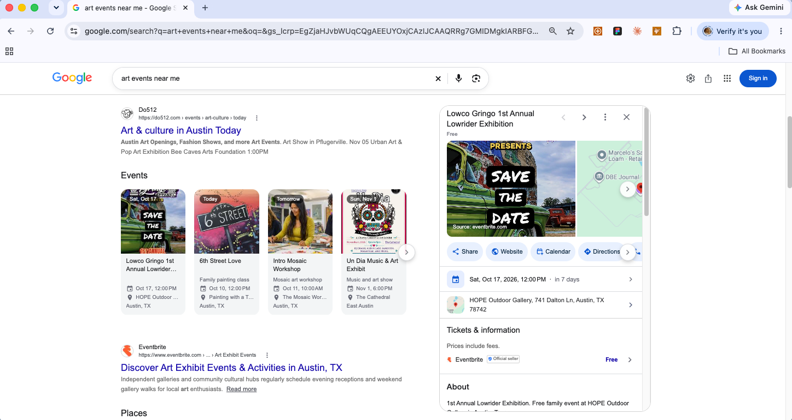
The result cards led with the event title, then the date and time together, with the location underneath, and showed much more once you clicked in.
That led me to create the following information hierarchy:
- 1. Title
- 2. Date
- 3. Location
- 4. Time
- 5. Category
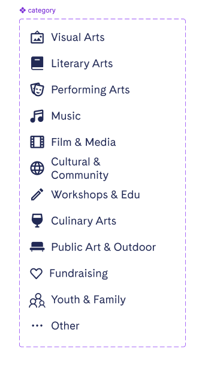
Category was my own addition to the hierarchy. With so many events in one calendar, I wanted users to be able to filter down to the type of events they personally would have interest in, which could reduce information overload.
That raised a new question: which categories to include?
The Trust described art very broadly, with everything from gallery openings to street performances in scope. I cross-referenced existing event calendars like Houston’s Museum of Fine Arts and used AI (Claude & ChatGPT) to help sort overlapping categories into a clean, non-redundant set before I designed a single screen.
Iterating the Featured Event Card
When I went back through my featured cards against that hierarchy, they led with the title, a one-line summary, and category and tags, but location and time weren’t visible at a glance. I redesigned the card so the date, title, location, and time read first, with category and tags after.
V1
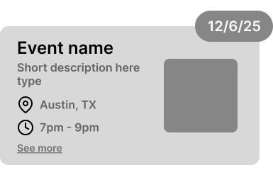
V2
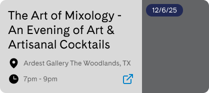
V3
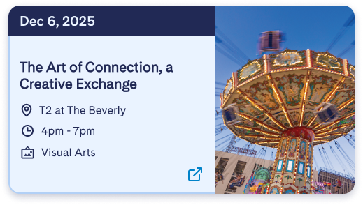
V4
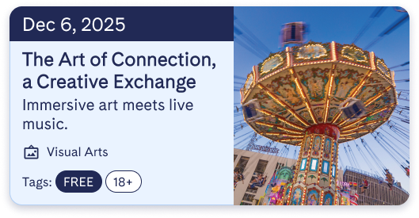
V5 (Final)
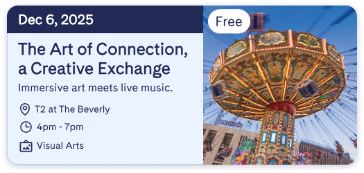
Helping people find nearby events
A statewide calendar could overwhelm someone who just wanted to find something nearby. My first approach was a short onboarding quiz that asked visitors about their interests before showing events.
Before
After
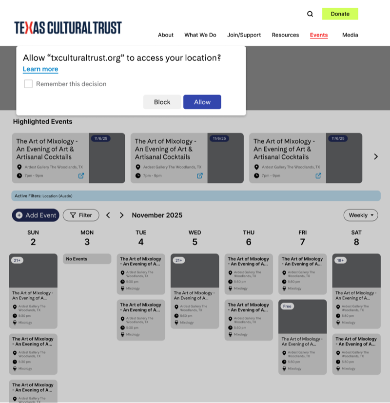
My team and peers preferred seeing events immediately. Based on that feedback, I removed the quiz and designed a location prompt so the calendar could show events in the visitor’s city first. Filters let them narrow the results further.
This shifted the experience from answering questions before browsing to exploring events right away.
Adapting the calendar to different screens
I used Google Calendar as a familiar reference for the desktop weekly view of the calendar.
Reference
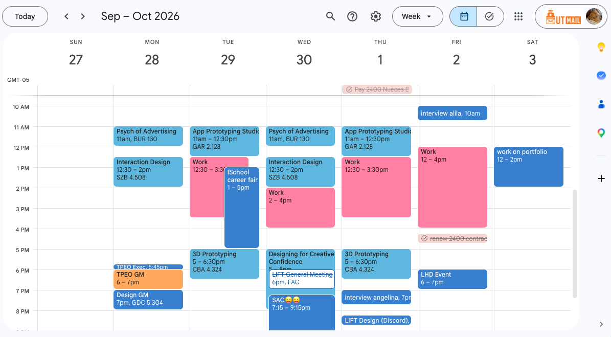
My design
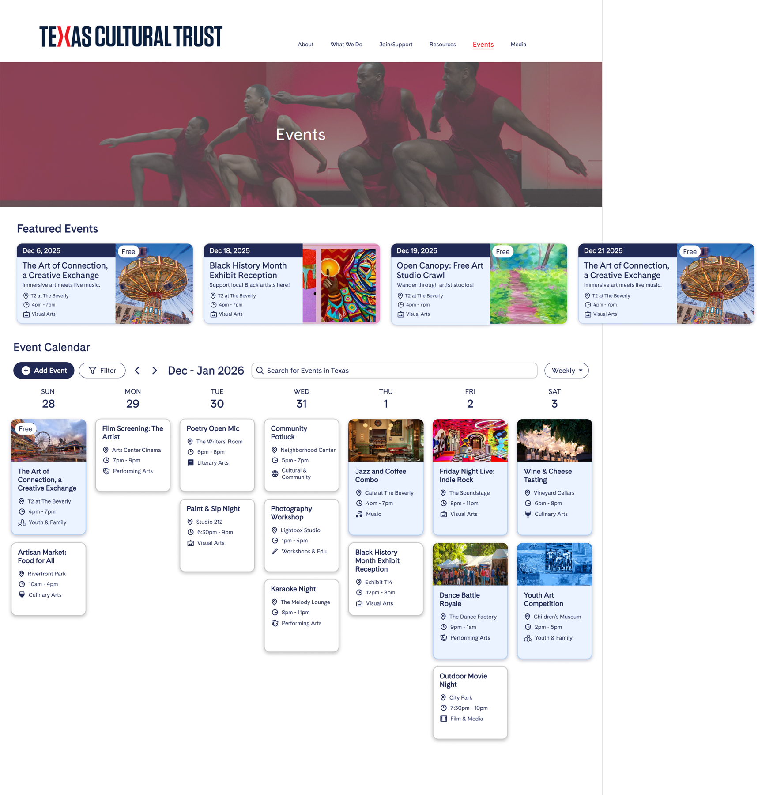
Partway through the project, the Trust shared that most visitors use their site on mobile. Unfortunately... we hadn’t planned for that, and I’d been designing exclusively for desktop. That’s when we realized the design had to be responsive.
I hadn’t built responsive design in Figma before, so I learned to use variables that scale type and spacing between mobile and desktop.
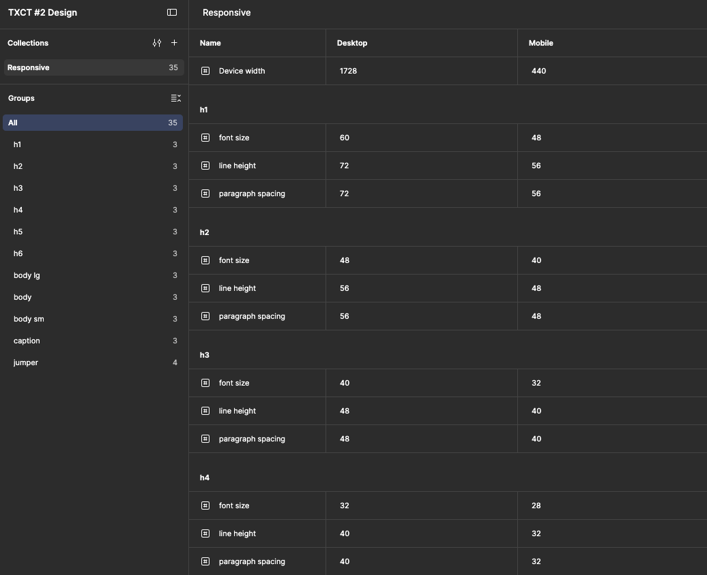
The harder lesson was that responsive design isn’t shrinking things to fit; it’s deciding what components matter most on a small screen. Making a weekly view of the weekly Event Calendar would be more complicated than simply shrinking it to fit onto the smaller screen, the text became unreadable. I was at a loss for how to go about designing it.
Before
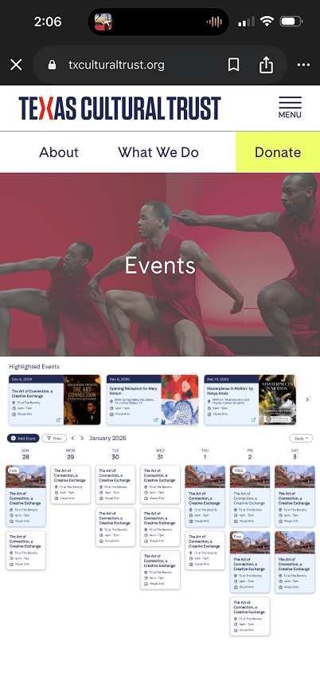
Reference
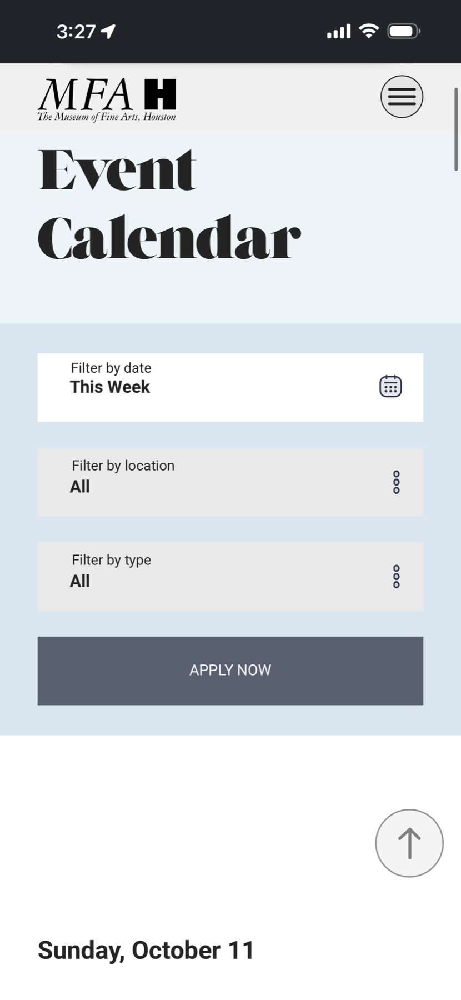
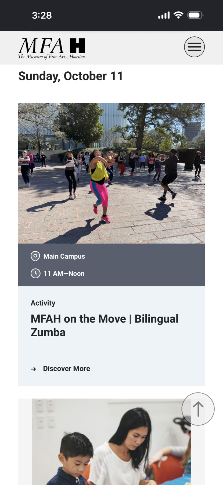
After
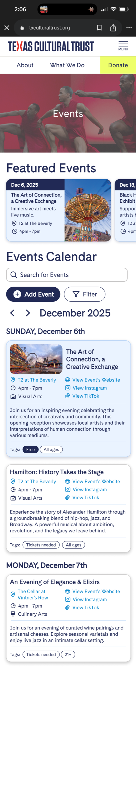
I followed the Houston’s Fine Arts Museum Event Calendar, which shows only a daily view on mobile. People can’t switch to weekly or monthly. They scroll through days and move between months with the arrows at the top. I put the space toward the controls that matter most on a phone: search, filter, and Add Event. Instead of having the weekly cards, I opted to use the expanded version of the card for mobile so users don’t have to go through the extra step of clicking. This I felt was okay because generally only one or two events fit on the screen at a time, if I were to do an expanded card for everything on the weekly version on desktop, that would be too overwhelming.
Balancing free access with paid visibility
The calendar needed to support the Trust financially while serving the public. The Trust wanted providers to have a free submission option as a public service. Paid listings therefore needed to offer a clear visibility benefit beyond simply supporting the nonprofit.
The Trust defined four tiers: Free Listing ($0), Calendar Image ($50), Featured at Top ($100), and Premium Package ($150), which combined both upgrades.
-
Free Listing
$0
Basic event listing at the bottom of the calendar (no image).
-
Calendar Image
$50
Display your event with a custom image in the calendar view.
-
Featured at Top
$100
Appear in the featured events section at the very top.
-
Premium Package
$150
Maximum visibility: image in the calendar AND featured at the top.
My challenge was to make paid events stand out while keeping free listings readable. I kept event text the same size across listing types and used color highlighting and photos to give paid listings more visual emphasis.
Iterating the Calendar Event Card
V1
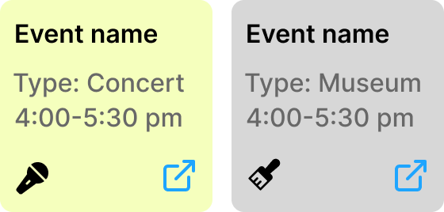
V2
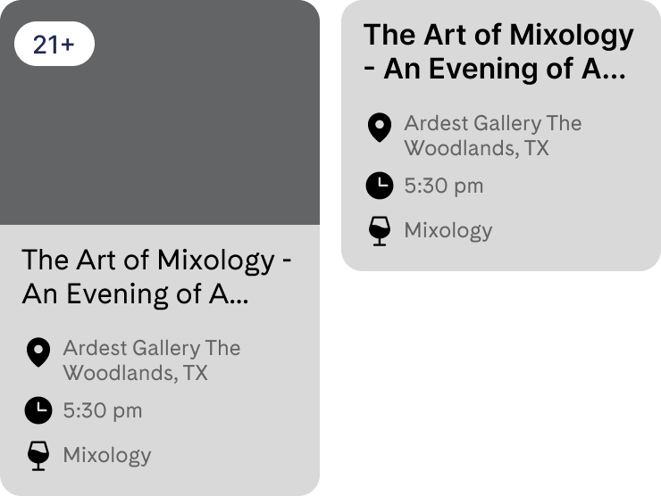
V3
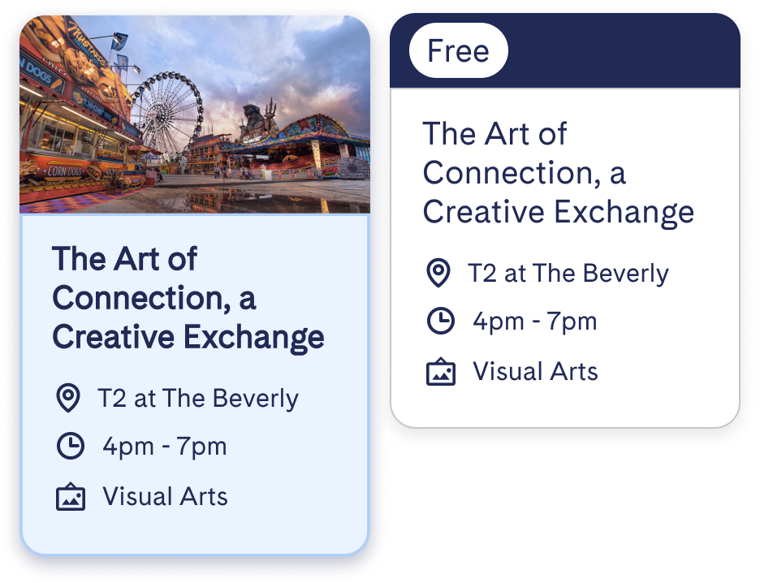
V4
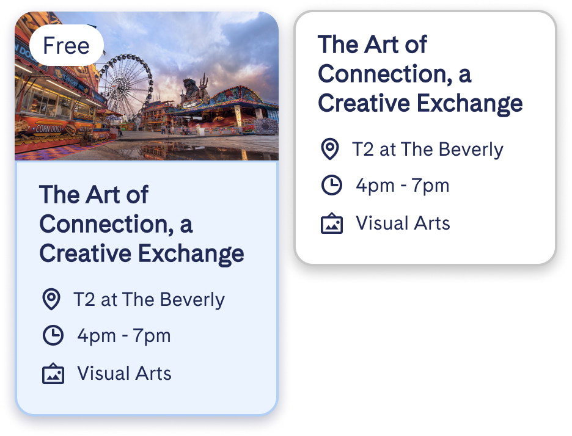
I initially placed featured events in a column beside the calendar, but this squeezed an already dense layout. During a weekly review, a stakeholder suggested moving them above it. I developed that suggestion into a featured row, giving the calendar more room and promoted events a prominent position.
Before
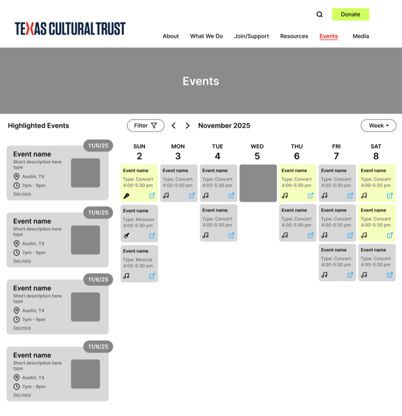
After
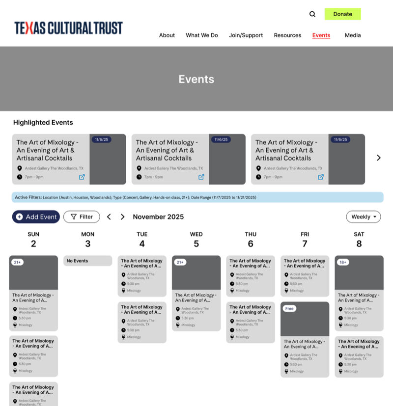
Final
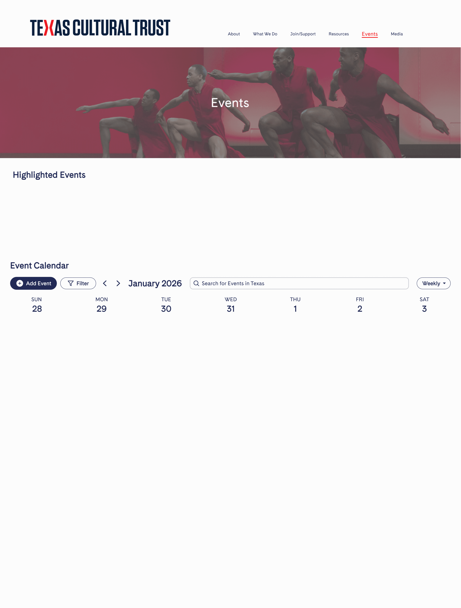
The Add Event form is where the calendar pays for itself. Providers submit their event here and choose a listing tier, from the free listing to the $150 Premium Package. The paid options are framed as donations to the Trust, so it earns from the calendar while any provider can still submit an event for free.
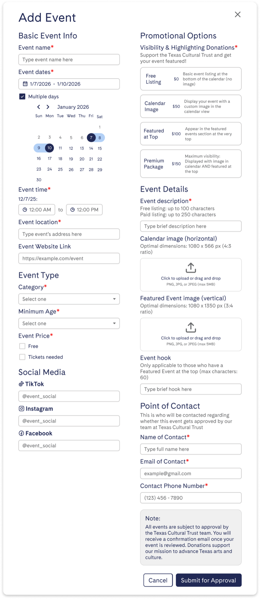
The Trust wanted to approve every event before it went live, so I designed the form around that. It collects a point of contact the team can reach about approval, and a note above the Submit for Approval button tells providers that every event is reviewed and that they’ll get a confirmation email once it has been. Organizing the event form into the different categories: basic event info, event type, social media, promotional options, event details, and point of contact was the most
Utilizing AI
Once I had a design system, I tried Figma Make to visualize a monthly view. I liked its layout and spacing, but it showed one event per day, which real calendars never do. So I designed for a day with 7 events. Any day with more than four shows “+n more,” which opens a pop-up like Google Calendar’s.
Figma Make output
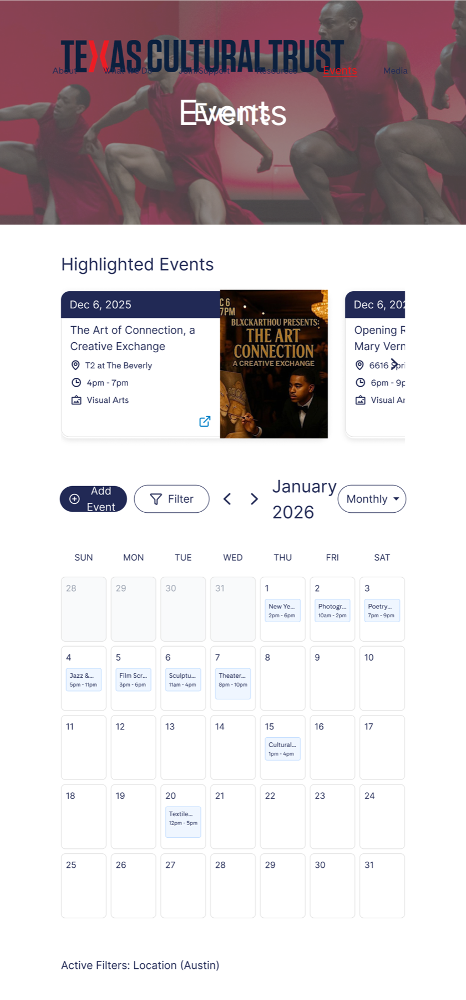
My design
Final Solution
Final design proposal, not the live site
Web prototype
Mobile prototype
Outcome & Limitations
What happened
Stakeholders responded positively to the designs during review, and I handed them off to the developers. However, the implemented Events page differed from the reviewed designs and did not include all of the planned functionality. The screens shown in this case study represent my final design proposal rather than the current website.
What I don’t know
I didn’t test the designs with users, so choices like the Google Calendar layout, the city default, and the daily mobile view rest on references, stakeholder input, and peer feedback.
What I’d do next
I’d talk with people who regularly attend and seek out art events to test whether they can find a relevant event to them through the calendar, and whether featured events really are what catches their eye first. I’d also test the daily mobile view and design the fallback for visitors who decline location access. On the provider side, I’d look at whether the paid options feel worth their cost.
Key Takeaways
-
Quality over quantity
Raising the three-page concern felt risky, but the Trust was receptive, and one page done well beat three done thinly.
-
Start from mobile
I built desktop first and shrank it down, which was the harder direction. Going from mobile to desktop was easier on the submission form, and I’d start there next time.
-
Push for research
I thought interviews were worth doing and let the idea go when it met pushback. Next time I’d advocate for sending out a short survey to screen people for interviews, asking questions in order to identify whether they regularly attend and/or seek art events.
-
Stay involved after handoff
Although implementation changes came up in our weekly team meetings, I didn’t see the built page until the day of the final presentation. I realized I needed to take a more active role after handoff by asking to review work in progress and meeting directly with the engineer between team meetings. Next time, I would schedule those check-ins to catch differences early, work through technical constraints together, and document agreed changes.
Thanks for Reading!
Curious about my other projects? Check them out below!
Back to Projects